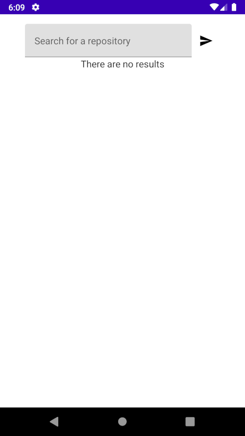
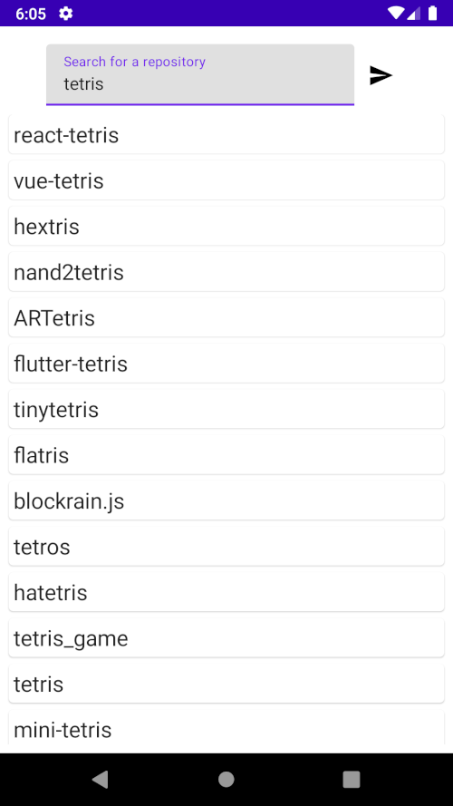
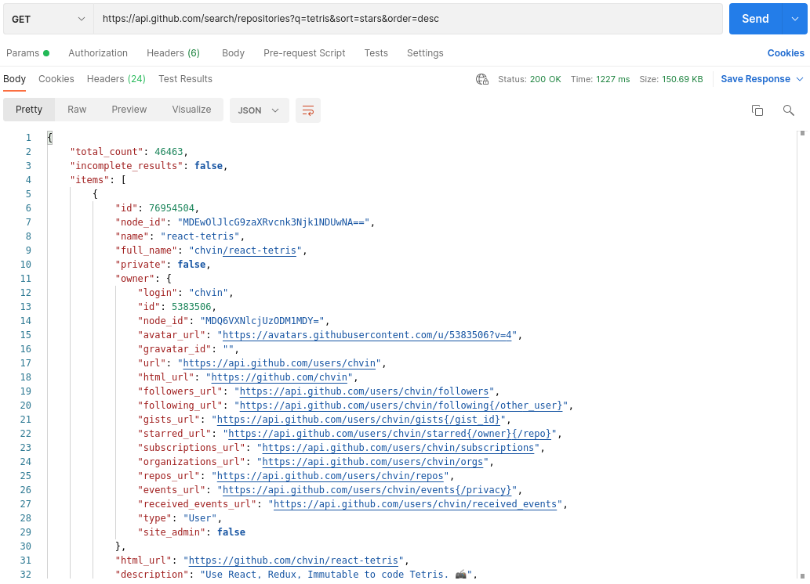

Recently I started doing more integrations tests which try to use as much real implementation as is possible for a given feature. Also, I stared using Ktor Client for network requests more, and that's when I discovered the MockEngine. The engine replaces real network calls with pre-defined data and status codes.
In this article, I'll try to show that adding it to a codebase is pretty straight forward. The project used in this article is a sample Android app which illustrates how to use MockEngine for Integration and UI tests
The application
Before we can start testing the application, we need to know what our requirements are. The app allows the user to search through GitHub repositories sorted by their star count. The application UI contains:
- A text input for the repository name
- A button which fetches the search results
- The result, which can be either an error message or a list of repositories


Mocking the responses
Understanding the API we're mocking
Now that we know what our functionality is, we need to know what data the GitHub Search API returns, so we can prepare our mocks.

Before mocking the responses, we could write an exploratory test where we call the real API and just ensure that Ktor responds with the correct response.
class GithubSearchApi {
private val httpClient = HttpClient {
install(JsonFeature) {
serializer = KotlinxSerializer(
Json {
prettyPrint = true
isLenient = true
ignoreUnknownKeys = true
}
)
}
}
suspend fun fetchRepositories(): List<RepositorySchema> {
val wrapper: ResponseWrapperSchema = httpClient
.get("https://api.github.com/search/repositories?q=tetris&sort=stars&order=desc")
return wrapper.items
}
}class GitHubApiExploratoryTest : KoinTest {
@Test
fun `Correctly fetches "tetris" repositories`() = runBlocking {
val results = GithubSearchApi().fetchRepositories()
results.first().name shouldBe "react-tetris"
}
}Once this test passes, we know that our API assumptions and modeling is correct, then we can start mocking this response.
Preparing data for the mock response
This step just involves copying the actual response to a JSON file or a simple Kotlin string, which we then return in our mocked response
const val FOR_TETRIS = """
{
"total_count": 46200,
"incomplete_results": false,
"items": [
{
"id": 76954504,
"node_id": "MDEwOlJlcG9zaXRvcnk3Njk1NDUwNA==",
"name": "react-tetris",
"full_name": "chvin/react-tetris",
"private": false,
"owner": {
"login": "chvin",
"id": 5383506,
"node_id": "MDQ6VXNlcjUzODM1MDY=",
"avatar_url": "https://avatars.githubusercontent.com/u/5383506?v=4",
"gravatar_id": "",
"url": "https://api.github.com/users/chvin",
"html_url": "https://github.com/chvin",
// ...In the sample project, I also created mocked responses for invalid user input and for "tet" search input.
Creating a simple MockEngine to pass the exploratory test
The MockEngine "constructor" takes in a lambda which takes in a request (HttpRequestData). Inside the lambda, we can respond to that request.
class GitHubApiMock {
val engine = MockEngine { request ->
respond(
content = MockedApiResponse.FOR_TETRIS,
status = HttpStatusCode.OK,
headers = headersOf(HttpHeaders.ContentType, "application/json")
)
}
}To use the mocked engine, we need to pass it to the Ktor HttpClient.
class GithubSearchApi {
val mockEngine = GitHubApiMock().engine
private val httpClient = HttpClient(
engine = mockEngine
) {
install(JsonFeature) {
serializer = KotlinxSerializer(
Json {
prettyPrint = true
isLenient = true
ignoreUnknownKeys = true
}
)
}
}
suspend fun fetchRepositories(): List<RepositorySchema> {
val wrapper: ResponseWrapperSchema = httpClient
.get("https://api.github.com/search/repositories?q=tetris&sort=stars&order=desc")
return wrapper.items
}
}The test should remain the same because we want to verify that it behaves the same way as the real GitHub API.
class GitHubApiExploratoryTest : KoinTest {
@Test
fun `Correctly fetches "tetris" repositories`() = runBlocking {
val results = GithubSearchApi().fetchRepositories()
results.first().name shouldBe "react-tetris"
}
}Customizing our MockEngine
Having an API that returns only one response is kind of pointless, however, the MockEngine allows us to extend its functionality based on the request that the user sent.
class GithubSearchApi {
// ...
suspend fun fetchRepositories(
searchKeyword: String
): List<RepositorySchema>? {
return try {
val wrapper: ResponseWrapperSchema = httpClient
.get("https://api.github.com/search/repositories?q=$searchKeyword&sort=stars&order=desc")
wrapper.items
} catch (e: ResponseException) {
null
}
}
}We allow the user to pass in a search keyword, which we will handle in the MockEngine.
class GitHubApiMock {
companion object {
const val TETRIS_KEYWORD = "tetris"
const val TET_KEYWORD = "tet"
}
val engine = MockEngine { request ->
handleSearchRequest(request)
?: errorResponse()
}
private fun MockRequestHandleScope.handleSearchRequest(
request: HttpRequestData
): HttpResponseData? {
// 1
if (request.url.encodedPath.contains("search/repositories").not()) {
return null
}
// 2
val searchKeyword = request.url.parameters["q"] ?: ""
val responseContent = when (searchKeyword.lowercase()) {
"tetris" -> MockedApiResponse.FOR_TETRIS
"tet" -> MockedApiResponse.FOR_TET
else -> MockedApiResponse.FOR_INVALID
}
return respond(
content = responseContent,
status = HttpStatusCode.OK,
headers = headersOf(HttpHeaders.ContentType, "application/json")
)
}
private fun MockRequestHandleScope.errorResponse(): HttpResponseData {
return respond(
content = "",
status = HttpStatusCode.BadRequest,
headers = headersOf(HttpHeaders.ContentType, "application/json")
)
}
}- If the request is for a different endpoint than the repository search, then we respond with an error.
- Based on the user search keyword, we return a different response
Sometimes in tests we also want to simulate API errors, so we can handle edge cases gracefully.
class GitHubApiMock {
private var isSuccess: Boolean? = null
get() = field ?: throw IllegalStateException("Mock has not beet initialized")
fun givenSuccess() {
isSuccess = true
}
fun givenFailure() {
isSuccess = false
}
val engine = MockEngine { request ->
handleSearchRequest(request)
?: errorResponse()
}
private fun MockRequestHandleScope.handleSearchRequest(
request: HttpRequestData
): HttpResponseData? {
// ...
val statusCode = if (isSuccess == true) {
HttpStatusCode.OK
} else {
HttpStatusCode.InternalServerError
}
return respond(
content = responseContent,
status = statusCode,
headers = headersOf(HttpHeaders.ContentType, "application/json")
)
}
// ...
}The givenSuccess and givenFailures are called in the tests in order to set up the correct API response.
The finished GitHubApiMock class used in the sample project is in the GitHub Repository. The mock is placed alongside production code to keep the example simple, in a real project it could be extracted to a test-utils module for example.
To make the MockEngine more extendable, instead of creating a method for handling each endpoint request, a class with a similar method could be injected through the constructor.
For even more extendibility, the class could be hidden behind an interface and be injected as a list of those interfaces.
interface MockHandler {
fun handleRequest(
scope: MockRequestHandleScope,
request: HttpRequestData
): HttpResponseData?
}class GitHubApiMock(handlers: List<MockHandler>) {
// ...
val engine = MockEngine { request ->
handlers.forEach { handler ->
val response = handler.handleRequest(this, request)
if (response != null) {
return@MockEngine response
}
}
return@MockEngine errorResponse()
}
// ...
}
This way the MockEngine doesn't know about the handlers implementation details, and the tests could only inject the handlers which they need.
Writing the Integration tests
In the sample project, the integration tests entry point is the domain class for the search feature. The domain class has the following contract:
class SearchManager {
suspend fun perform(keyword: String): SearchResult
}
Focusing on the Successful and Failure responses
At first, we don't care about the requirements other than getting the repository search result or an error.
@Test
fun `On API success returns the correct first result for keyword 'tetris'`() = runTest {
gitHubApiMock.givenSuccess()
val result = searchManager.perform(GitHubApiMock.TETRIS_KEYWORD)
assertSoftly {
result.shouldBeInstanceOf<SearchResult.Success>()
result.repositories.first() shouldBe RepositoryInfo(
id = 76954504,
name = "react-tetris",
ownerName = "chvin"
)
}
}@Test
fun `On API failure returns an error`() = runTest {
gitHubApiMock.givenFailure()
val result = searchManager.perform(GitHubApiMock.TETRIS_KEYWORD)
result shouldBe SearchResult.ApiError
}Validating user input
Taking into account our business requirement that the search should only happen if the user input length is at least 3 characters long.
First, we can write an acceptance test for it:
@Test
fun `Gives correct result if keyword is invalid`() = runTest {
val result = searchManager.perform("te")
result shouldBe SearchResult.InvalidKeyword
}Now we can implement the validation (of course with a corresponding unit test).
class SearchKeywordValidator {
fun validate(input: String): Boolean = input.trim().count() >= 3
}Ensuring that the API was not called
The MockEngine also allows accessing the request and response history. If we wanted to ensure that the API is not called on an invalid input, we could check the request history on the MockEngine.
@Test
fun `The API is not called if keyword is invalid`() = runTest {
val result = searchManager.perform("te")
result shouldBe SearchResult.InvalidKeyword
gitHubApiMock.engine.requestHistory.shouldBeEmpty()
}How to set up and maintain Integration tests with the help of dependency injection libraries / frameworks
Writing Integration can be cumbersome if there are a lot of classes, to help this there is a concept called Object Mothers. However, I think that this could be simplified by using a DI library / framework.
Besides simplifying the Integration test set-up, a similar strategy for dependency injection could be probably used when writing UI tests.
The framework I used in the example is Koin which is really easy to use in testing, however I'm sure this is also possible using other solutions like Dagger Hilt. For more details about my Koin set up, please check out the sample project on GitHub.
Using the MockEngine in UI tests
An additional benefit of using the Ktor MockEngine is that it can be also used in the Android app. The end user might not appreciate the small amount of results, however the pre-defined responses are a perfect fit for automated UI tests. The tests won't use an internet connection, which should reduce their flakiness, also network edge cases can also be easily mocked up.
I won't go into details of how the tests look like because they all depend on what testing framework is used. The most important part is that the dependency injection graph needs to be structured in such a way, that the UI tests are able to inject the MockEngine and replace the real HttpClientEngine. This step should also be a lot easier if the Integration tests also make use of such dependency graph.
The UI tests for the sample app look like this:
If you're interested in their implementation, the source code is in the repository.
What are the benefits of using Ktor MockEngine
For me, the biggest benefit is that the full network layer can be tested because we can make the mock behave just like the real API. We don't need to create additional abstractions in order to create test doubles for the network layer.
Those test doubles that simulate the network layer also require special maintenance attention. Changes in the production network layer also need to be applied in the test double.
The MockEngine also nicely ties into the Classic / Chicago Test Driven Development, where the tests try to use as many production dependencies as possible.
Besides mocking Ktor I've also covered In-Memory SQLDelight testing or Apollo GraphQL fake networking which might interest you. Additionally, I have an article series about what testing mistakes you should avoid if you want to improve your test suite.
A Kotlin Multiplatform side-note
I've used the MockEngine with success on a Kotlin Multiplatform Mobile project. However, I haven't got the chance to use it in the iOS UI tests. I don't see why it shouldn't work, but you never know (I'll write an update here when I'll have a chance to try it).
As far as Kotlin Multiplatform development goes, the MockEngine can really speed up the development cycle because the tests provide fast feedback about the implementation (even on Kotlin / Native).
Currently, as of writing this article, one of the biggest "issues" with Kotlin Multiplatform is the threading model which does not allow mutations on a background thread.
Network requests are one of the places that we extensively use the background thread. If we wanted to implement some cache for the response data, we would almost definitely need to mutate something.
Writing Integration tests, where real dependencies are used, can save a lot of debugging time on the iOS side caused by wrong mutations on the background thread. The MockEngine is a great fit for this, because the tests still use the real Ktor HttpClientEngine, but just with predefined responses.